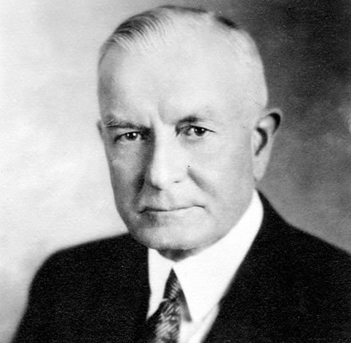

Thomas John Watson Sr. was born in February 17, 1874 and died in June 19, 1956 after several remarkable accomplishments. Chairman as well as CEO of IBM, Thomas was an renowned American businessman. Mr. Watson , self-made industrialist, was one of the richest man of his times and was called the world’s greatest salesman. Watson saw company’s growth into international force and developed IBM’s manangement style and corporate culture. He turned the the company in one of the highly effective selling organization.
| Year | Education |
|---|---|
| 2001-2003 | Ideal Model School |
| 2004-2016 | Global College of Management |